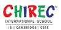

Execellence awards
Established in 1989 by Ratna Reddy, CHIREC was founded as a vibrant summer camp for children to develop their skills in arts, sports, and technology. Over the last 29 years, CHIREC International School has grown to become a leader
Develop done
CHIREC International School offers CBSE, IB and Cambridge curricula, and is recognized as one of the best schools in Hyderabad, Telangana and in India.
Global innovative
CHIREC International fosters creativity in the student body by providing exposure to various arts, so the students can identify their interests and aptitudes before developing these talents.